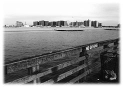
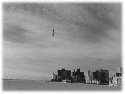

|
だらしなくふらつく視界の中に、お化け工場のようなアパートが見えてきた。青くふくらんだ月の下で、砂岩がはめこまれた壁が赤褐色に立ちはだかる。クラシックなアパートを望む最近の若者たちなら、この建物に歓声を上げる者もいるであろう。しかし、このタフィープレイスという寂れた通りの両側に立ち並んでいるのはもともとアパートとして建てられたビルディングではない。数十年にもわたって放り投げられていた繊維工場や倉庫をユダヤ資本の不動産会社が買い取り、内装だけやり直して一見人が住めるように作り変えたのだ。ファイヤーエスケープもなく、内部は迷路のように曲がりくねっている。アメリカの建築基準法に照らし合わせても、認可にはほど遠いアパートメントである。したがってここには入居者審査というものがなかった。残高チェックなしで、数カ月分の前金を払えば誰でも住まわせるというやり方である。
建物の内部はお粗末そのものだった。フローリングしてあるように見える床はあちらこちらが窪んでいて、土台そのものが傾いていた。通路のあちこちには開かずの間があり、錆びついたドアの向こうでメキシコ人作業員たちが昼寝を決めこんでいたりした。塗装もまたむちゃくちゃだった。新しくペイントはしたものの、その１ミリ下には戦前のものらしい有毒な鉛の塗料が残っていた。だから壁にはなるべく触らないように、とメキシコ人の大工から注意があった。
長らく無人の通りだったタフィープレイスとその周辺のビル群。それを即席で人が住めるようにデコレーションしようという強引な計画から、投入された不法入国メキシコ人の数は半端ではなかった。どこかの学校に通う学生たちでもあるかのように彼らは地下鉄の駅から吐き出され、あたりの倉庫から湧きだし、ぞろぞろとこのエリアに向かって行進した。そして彼らはそれぞれの持ち場に陣取り、働いているのか眠っているのかわからない熱意で労働の真似事を試みた。
こういったことはブルックリンに限らない話だ。丸っきり意欲の感じられないメキシコ人の労働力でニューヨークの建築現場は回転している。レストランの厨房も成り立っている。日本料理店も韓国料理店もイタリアンも実際に厨房で働いているのはメキシコ人である。西海岸も東海岸も、アメリカの大都市はメキシコ人がいなければもはや回らない。そのことをアメリカ人はうすうす知っている。だから国境沿いでは厳しいチェックが行われても、すでにアメリカ国内に入りこんでしまったメキシコ人に対して警察が身分証明をチェックするようなことはありえない。入りこんでしまえばメキシコ人の勝ちなのだ。しかし、いや、だからこそかもしれないが、彼らは熱意をもって働くわけではない。
このイリーガルなアパートにやってきた時、部屋も通路も階段も、すべては不動産屋の説明とかけ離れた様相だった。私は窓ガラスさえはめられていない部屋で、失ってしまった財産のことや、離ればなれになってしまった娘の顔を思い浮かべながら呆然としていた。多くの悲惨を経験して、魂の離脱状態にあったのかもしれない。するとペンキ塗りのメキシコ人はペンキを塗るわけでもなく、雑誌を開くわけでもなく、私の横でいつの間にか日なたぼっこを始めているのだった。
三十分刷毛を使っては三十分寝転び、暇があれば日なたぼっこ。
しかも入居者の横で。
あれはいったい何か。まったく働こうとせず、どうやって理想をつかもうとしているのか。そもそも理想がないのか。切迫したものがないのか。
そんなはずはあるまい。ボートピープルとして日本にやってくる福建省の中国人同様、彼らは国境を越えるために密入国シンジケートに多額の金を払っているらしい。一連の保証人事件で私が失った額ほど莫大ではないにしろ、二、三年働いた程度では返せない借金を背負っている者もいるはずなのだ。国境の砂漠越えで命を落とす悲惨な事故も後を断たない。それなのになぜ彼らは日なたぼっこをしているのか。その余裕はどこからくるのか。
もちろん他人のことが言えるわけではない。私もまた大きな失敗をしてブルックリンに流れ着いてしまった日本人である。お前こそ羅針盤を失っていると言われても、私には言い返す言葉がない。それに私には、だらだらと陽を浴びているメキシコ人を理解せずとも許してしまうようなところがあった。だからカルロスが借金を踏み倒した時も大ごとにはしなかったのだ。そのために養育費が滞ってしまっても、私はカルロスの人間性を信じた。いつかきっと私の前に現われてくれるものだと高をくくっていた。そしてその甘さが結果的に、意味的にも物理的にも私の首をしめることになった。
私の失敗の原因。それは甘さである。
きっちりとした性格であれば、連帯保証人などにはならなかったはずだ。苦労して築き上げた店を失わなかったはずだ。離婚届けの判も押さなかったはずだ。娘を失わなかったはずだ。一銭の得にもならない深夜の労働などしなかったはずだ。インチキな弁護士に騙されなかったはずだ。そういったことはすべて、私の甘さからきている。
私は大学を卒業して以降、料理の味しか知らないで生きてきた。どうやってお客様をもてなすのか、そればかりが頭にあった。そこには詩があった。イメージの爆発があった。一皿一皿の料理は物語であり、生きている血潮だった。だからそこにはありったけの情熱を注いでいた。そしてそれ以外のことは、すべて甘く済ませてしまった。
その甘さが私を破滅に追いこんだのだ。
それからもうひとつ。
それは突如やって来た底なしの疲労である。
人間は百億円の借金を背負っていても、マグマのように吹き上がる熱意があれば死を選ばない生き物なのかもしれない。どんな逆境がやってこようと、裏切られようと、バカにされようと、目的がひとつあればそれにしがみついて生きていける。だから、何々が自殺の原因で、という新聞やテレビの表現は間違っている。何かの原因があって人は滅びるのではない。原因の積み重なりがボディーブローのように効いてきて、ある夜、命の火そのものが自ら消えることを望むようになるのである。
誰にも愛されていないと気付いた時も同じだ。その火は自ら終わることで痕跡を消そうとする。愛してくれた人がいる時空へ向かおうとする。
過去の些細なことばかり思い出すのは、きっとそのせいだ。
この現世に於いて、私はもう疲れ切ってしまった。歩いていけない。
メキシコ人のようにもなれない。
母ちゃん、父ちゃん、私はそばにいくよ。

気がつけば私は自分の部屋に入りこんでいた。
名前のない、タフィープレイス241とだけ記された無認可アパートの七階である。窓辺からは青白く月光が差しこんでいる。
私は最後に、娘に電話をしようかどうか、大いに迷った。
時計の長針はいまだにぐるぐる回り続けている。短針は三時を示したままだ。もしも短針を信じるならば今は午前三時、日本はその日の午後五時ということになる。娘は学校からそろそろ帰っている時間帯であろうか。
しかし娘が電話口に出たとして、何を語る？
さよならを告げるべきなのか。
私は強く首を振った。そんなことをしてしまうと娘に生涯消えぬ傷を与えてしまうことになる。別れをしたためた手紙はすでに机の引き出しの中に入っている。今日の行動を予測して、何日も前に書いた遺書を封筒に入れておいた。それで充分だ。妻と娘には、とにかく詫びることだけを繰り返した。私の気持ちを正直に綴った。
| 今ひとつ私は・・・生きていく上での運というものをつかめませんでした。どうにもこうにも現実の世の中とは折り合いが悪かったようです。私はこのまま消えることにしました。あとは自由に、私のことなど思い出さずに生きて行ってください。それが私の望みです。私は遠くから、いつもカリンのことを応援しています。水になり、草になり、光になり、そういう形で応援しています。思い出されなくてもいい存在として。私ができなかった分だけ、あなたは自分の人生を謳歌してください・・・ |
長々と様々なことを綴り、どこかにそんなことを記したという記憶がふいにやってきた。勝手だな、とも思ったが、では何を綴るべきなのか、それがわからなかった。勝手ではない遺書など、ありうるのだろうか。
私の遺体は午前中にやってくるはずのメキシコ人の大工が発見するであろう。床の凹凸にカンナをかけるため、今日は大工がやってくることになっている。たぶんペンキを塗りながら日なたぼっこを始めてしまうあの男だ。彼は二十代の半ばだろうか。天井から吊り下がっている私の遺体を見付けた時は驚くであろう。かなりのショックを与えてしまうに違いない。
ごめんよ、メキシコ青年。目をそむけたら、そのまま911に電話してくれ。
私は灯りをつけないまま、月光の中でテーブルを移動させた。もともと倉庫として使われていたビルだから天井はかなり高い。４メートル以上ある。その天井に数本の水道管がむきだしで設置されている。火災が起きた時、スプリンクラーから水を噴出させるための水道管である。
私は荷造りの時に使ったロープの残りをクローゼットから取り出すと、そのままテーブルに飛び乗った。靴はその前に脱いだ。セーターも脱いでズボンとシャツだけの姿になった。
ロープの端を結んで玉を作り、厚紙にコイル状に巻かれているロープを2、3メートルほど引き延ばした。そして玉を作った方のロープを右手でぐるぐる回し、投げ縄の要領で天井の水道管にからめようとした。
やはり娘に電話するべきであろうか。
これから起きることは何も言わず、ただ一度娘の声を。
そのような迷いが再びやってきた時、ロープは天井と水道管の間をくぐり抜け、私の手もとに返ってきた。
こんなものでいいのだろうか、という気がした。西部劇に出てくる縛り首のロープのように、もっとしっかりとした首吊り用の輪というものを想像していたのだが、天井から目の前に垂れ下がっているのは直径１センチほどのただの白いロープである。しかも首をきゅっと絞める輪っかすら作ることができない。ロープは確かに水道管をくぐっているから手もとで結べば大きな輪を作ることができる。だがそれは大きすぎて首を吊る輪にはならない。それに余分なロープを切断するためのハサミを忘れてしまった。これではいかにも不格好だ。
私はテーブルから飛び降りると、キッチン棚から料理用のハサミを取り出してきた。そこで少しひらめくことがあった。
首を吊るということがどれぐらい窮屈で、どれぐらいの痛みを伴う行為なのか私にはわからない。あんなに緩い輪っかを作ってしまうと、最後の最後に脱出を図ろうとする自分がいるかもしれない。両手が自由ならそれは考えられることだ。首とロープの間に指を入れ、最後のバカ力でそこから逃げ出してしまうかもしれない。ゼイゼイあえぎながら、やっぱりやめたあ、思ったよりも苦しいもの、などと情けないことを言い散らして。
そうさせないためには、この両腕の自由を奪うに限る。背後は難しいけれども、胸の前なら何とか両手をロープで固定できそうだった。私は床に座りこみ、両手首を十字に合わせてそこに切断したロープを巻きつけていった。ぐるぐると巻いては歯で噛んで締め上げ、最終的にはかじり付いたロープを一重結びすることに成功した。力を入れるとすぐにほどけてしまいそうだったが、何もしないよりはずっとましに見えた。
そのままもう一度テーブルに飛び乗る。レンタル家具屋で借りた粗悪なテーブルだ。最初から不安定に傾いていた。これが生きている私の最後の土台。
水道管から垂れ下がっているロープの結び目は床から高さ２メートルほどである。ここに首をかけてテーブルから飛び降りれば、どうやっても床に足がつくことはあり得ない。私は自分で結んだ両手でロープを不器用に触りながら、一番下の部分をひねった。こうすると鎖のようにロープはねじれ、首を吊るのにふさわしい輪っかができた。その輪っかをさらに折り返して二重にする。これなら何かの反動で首からはずれるということがないだろう。
最近めっきり額の広くなった頭を入れる。
いよいよだ。
娘カリンの顔を思い浮かべる。
ずっと東に向かって、さよなら、と小さくささやいた。
娘をディズニーランドに連れていった時のことが急に鮮明によみがえってきた。あの時、カリンはまだ幼稚園児だった。ミッキーマウスの帽子を買ってやったら、一日中うれしそうにかぶっていた。挙げ句、ベッドにまで持ちこんでしまい、それをかぶったままスヤスヤと寝てしまった。生きているハムスターを買ってやったのはそれからすぐ後だ。私は調理人のくせにネズミを殺そうとはしなかった。東京でもニューヨークでも、ネズミに嫌悪感を抱かなかった。
娘がハムスターを抱いている。
娘がハムスターと遊んでいる。
娘がハムスターと。
あの時、私は幸福だった。
そう、幸福な時もあったのだ。
穏やかな気持ちが胸にやってきた。
私はそのまま、月光の中でテーブルから飛び下りた。
ガン、と鋭い衝撃があごにやってきて、首が強烈に絞められるのがわかった。ガリっと音がして首の骨が砕けたような気がした。息ができない。一瞬にして頭の中が沸騰したように熱くなった。目の前が真っ白になる。息ができない。肺が破裂したようだ。鼻から血が出ている。息ができない。
さよなら。みんな、さよなら。

だがその瞬間、同じ月光の青さの中で、私の爪先は床に触れていた。両足ともかすかにしかし確実に触れていた。私はバレエダンサーのように爪先で立っていた。首をロープで絞められたまま。
私はほぼ窒息した状態である。意識が何度も遠のいていく。それなのに私は爪先で器用に立っている。死のうとしているのに、身体がそれを許さない。硬直したまま私は立っている。
首の周りが炎で焼かれているように熱い。舌が口から飛び出していて、わずかばかり開いた気道から笛を吹くような音が鳴っている。その音は誰もいない私の部屋にヒューヒューと響き渡った。私は首を吊りながら、それでも呼吸をしているのだ。鼻から血を流しながら、まだ生きようとしているのだ。眼球が顔から飛び出しそうだ。まばたきをすることができない。首はじりじりと締め上げられ、目は自然と天井を向いてしまう。
そんなことが。
天井に設置された水道管が、私の身体の重みでまっ二つにぐしゃりと折れていた。ロープが掛けられたところを頂点に、逆三角形に折れ曲がっている。その折れ曲がった分だけロープが床に近付き、私は爪先立ちのまま吊り下げられていた。
死ねない。これでは死ねない。
苦しみが続くだけだ。限界まで首を絞められ、それでもかすかに息をして、私は生きている。
メキシコ人大工の顔が浮かんできた。そして悶絶の中ですべてを理解した。
このスプリンクラーはフェイクだったのだ。ニセモノだったのだ。あいつらは水の通っていない形ばかりの水道管をネジか何かで天井に簡単に取り付けただけなのだ。火災報知器の横にそうやってまがい物のスプリンクラーを設置し、消防署の認可を取ろうとしていたのだ。たくさんの犠牲者を出した赤坂のホテル火災。あのホテルと同じことをここのユダヤ人オーナーはやっていたわけだ。そしてそれをメキシコ人大工たちは忠実に守った。
鼻から流れ出る血が咽に逆流してきた。
これでは死ねないと思ったのは大間違いだった。気道を伝わるヒューヒューという音が聞こえなくなり、血が咽の奥で泡になって震えているのがわかる。
いよいよ本格的に視野がかすんできた。手足が小刻みに痙攣し始め、指先が氷のように冷たくなる。こんなにみっともない首吊りでも、死は確実に近付いてきている。私は初めて底なしの恐怖を感じ始めた。自分が今行っていることに対して、根底から説明のつかない拒絶感が湧いてきた。だが私は死の穴に向かって加速度的に転がり落ちている。もう止まらない。
娘の顔がまた浮かんできた。
ハムスターと遊んでいた頃の、まだ小さな小さな娘。
あのハムスターは外の空気を吸わせようとしてケージごとベランダに出してしまい、一時間後に気付いた時にはすでに死んでいたのだった。直射日光にあてたことがその原因だった。娘はまだ死の意味がわからず、硬直したハムスターを手の平に載せてきょとんとした表情をしていた。
カリンちゃん、いっしょにハムスターを埋めに行こうね。
私がそう促すと、娘はその時初めて目を潤ませ、しゃべられないからかわいちょうだね、と言ったのだった。
私は死ぬのだろうか。本当に？
娘が小さな穴の横で泣いている。
やはり私は死ぬべきではなかったのではないだろうか。
どんな逆境にあっても生きていくべきではなかったのか。
母ちゃんが岩場でトコブシを採っている。
城ケ崎のイガイガ根に大波が砕けて当たっている。その波に消えそうになりながらトコブシを採っている。母ちゃんが手を振っている。もう夕方だから、イガイガ根は危ないというのに。
沖の漁船はきっと父ちゃんだろう。波間に船の灯りが見え隠れしている。
お待ちどうさま。
私は初めてのお客さんに、イサキのサンガ焼きを出した。イサキをミンチにして、刻んだネギやショウガを入れて、アワビの殻に詰めこんで丁寧に焼いた。
お客さんは一口食べて、ゆっくりと私の顔を見た。そして、ありがとうとつぶやいた。中年のお客さんだった。一人で酒を飲んでいるお客さんだった。働くということの意味はそういうことだった。お金のためではなかったのかもしれない。
イガイガ根に真っ黒な波が押し寄せている。私は英単語を覚えている。夜釣りの電気ウキが真っ赤な点になって波間に揺れている。私は広告の裏に数式を書きこんでいる。シマイサキが釣れたら、カリンのためにサンガ焼きを作ってやろう。
あのハムスター、どこに埋めたのだっけ。
あの小さな穴は。
私はいったい。
しゃべられないからかわいちょうだね。
娘が穴の上から私を見ている。
月光の中に天井が見える。折れた水道管からロープが下がっている。ロープは私の首を絞めている。咽はまるでガスバーナーか何かで直接焼かれているようだ。
水道管の上に数匹のネズミが乗っかっている。駅の階段で見かけたあの黄緑のネズミだ。チキン屋のゴミ袋のところにいた二匹の朱色のネズミもいる。ネズミはまだあと数匹いるようで、折れ曲がった水道管の上をカラフルな色彩で行ったり来たりしている。色鉛筆の缶を開けたような鮮やかなネズミたちだ。それにずいぶんと器用なものだ。みんなビーンズの靴をはいているのに、滑りやすい鉄管の上でちょこまかと実に軽快に動く。
「タカハシさん・・・線路でまた生まれたよ」
水道管の上から話し掛けられたような気がした。
だが私は何も答えられない。穴の底から彼らを見ている。ハムスターを直射日光に当ててしまったのは私のせいだったのかもしれない。熱いと言えない小さな命を私は殺してしまった。だから今さらネズミたちに話しかけられても、私にはどうすることもできない。私は死んでいるのか。生きているのか。もし生きているのだとしたら、かすかに呼吸できているのが不思議なぐらい首は完全に締まり切り、血は泡を吹き出したながら鈍く固まろうとしている。
「舌がサボテン毛虫のように飛び出しているよ」
「砂嵐が来る」
「手伝ってよ。リンゴダンスのように息を合わせて」
やはりネズミたちが話している。私の頭の上で、随分とかん高い声が交錯している。
まさか、とは思ったが、それ以外考えられない。
まばたきができず、目が不自然に寄ってしまっているために水道管もネズミたちも曖昧に重なって見える。うまく像を結ぶことができない。だが今夜は月があんまり明るいので、彩りの鮮やかな彼らがそこにいる、ということがしっかりとわかるのだ。
「爪先でちゃんと立っているよ」
「爪先でちゃんと立っている。でも、砂嵐はきっかり三時間続くよ」
「手伝ってよ。そっちを焼こう」
早口言葉をさらに早口でまくし立てたような、レコードの回転数をいきなり78までアップしたような、とにかくキンキンと響くネズミたちの声が固まりで落ちてくる。彼らは前脚で何か光るものをはさみ、それを水道管とロープの接点に一生懸命にこすりつけているようだった。ゆがんでしまった私の目からはそれが何であるのかわからない。煙のようなふわふわとしたものが部屋の中に漂い始めたような気配もある。しかし鼻が血で詰まってしまったために匂いがわからない。もしかしたらそれは私の身体を離れ始めた魂なのかもしれない。ふわふわとしたものは私を覆う。その中で私は再び穴に落ちていく。娘とハムスターが私を覗きこんでいる。もう戻れない。足先を伊豆の夜の海が洗っている。数千匹の小魚がスズキに追いかけられ、波間に飛び上がって逃げていく。月光に笠がかかっている。明日は雨だ。天城連峰はどしゃ降りだ。
「そこんとこだよ。おまじないは食用ホオズキだ」
「まったく、何でまた、首を吊ろうなんて思ったのかね」
「靴が落ちる。靴が落ちる」
「手伝ってよサンチョ、そっちを焼くんだよ」
私は穴の下に落ちていったはずなのに、目の前には折れ曲がった水道管がある。夢か現かはわからずとも、ネズミたちの声は引き続き聞こえてくる。彼らはやはり話をしている。どうやらひとつの目的に向けて機能しない集団を一匹のネズミがいらいらしながらまとめあげているらしい。手伝ってよ、と繰り返しているのはあの黄緑のネズミなのかもしれない。
「ようし、もうすぐだよ。そこを焼いて」
「アステカの先祖代々、火なんか持ったことがないんだからね」
「まったく火なんか持ったことがないね。災いの始まりだ」
「テオティワカンのお祭りなら」
おぼろげな視界の中で、ピンと張ったロープのてっぺんに火がついている幻を見たような気がする。だとすれば、漂っているのはやはり煙なのかもしれない。
待てよ。私は。
まさか。
「そうら、もうすぐだ」
「もうすぐだ。ちょっと、熱いよ」
「線路でまた生まれたんだよ」
「いったかい？ どうだい？」
「よしきた！」
ツン、と乾いた音がした。月光の中で火の粉が散り、水道管の上でロープが切れるのがはっきりと見えた。私はその瞬間に首を絞めていた重力と張力から解放され、後ろ向きに派手に転がった。両手を胸の前で結んでいたために受け身を取ることができず、後頭部から激しく床に叩きつけられた。その衝撃で再び目の前が真っ白になった。
（第２回了）
|